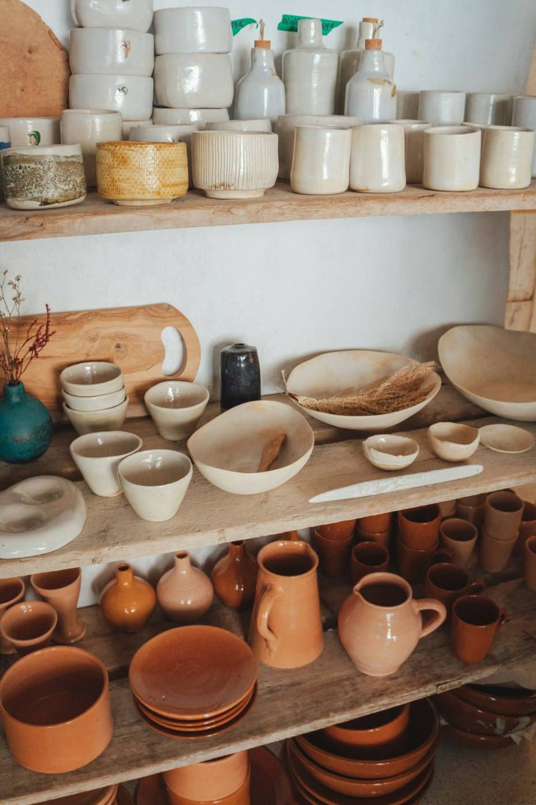

3
Au 3 rue Saint-Guénolé, au cœur des remparts de Concarneau, Quai n°3 présente le travail de créateurs et d'artisans.

Chaque pièce exposée vient d'un créateur ou d'un atelier : objets, décoration, bijoux ou accessoires selon les collections de la saison.
Les nouveautés et les créateurs présents sont présentés sur Instagram et sur Facebook.
La boutique ouvre pendant la saison touristique, généralement de 11h à 18h. La saison 2026 s'est terminée le 30 septembre : les dates de réouverture seront annoncées sur Instagram.